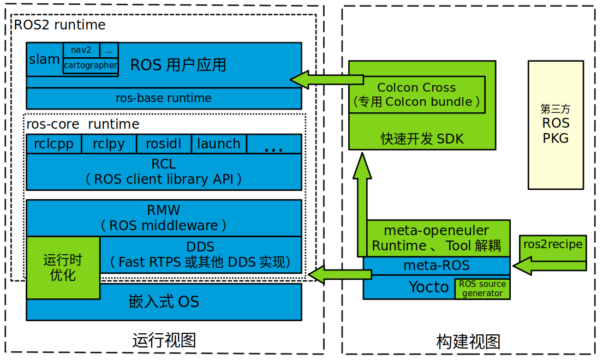
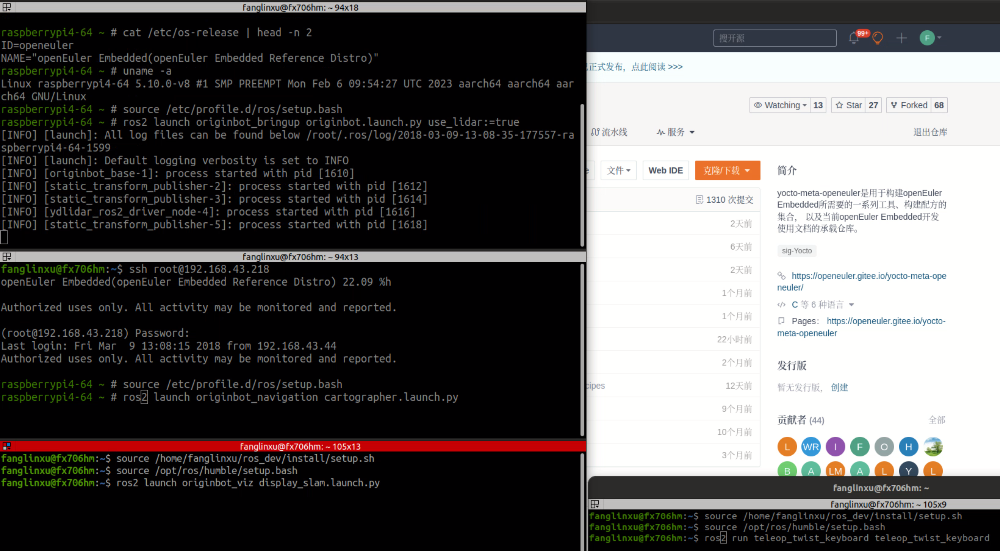
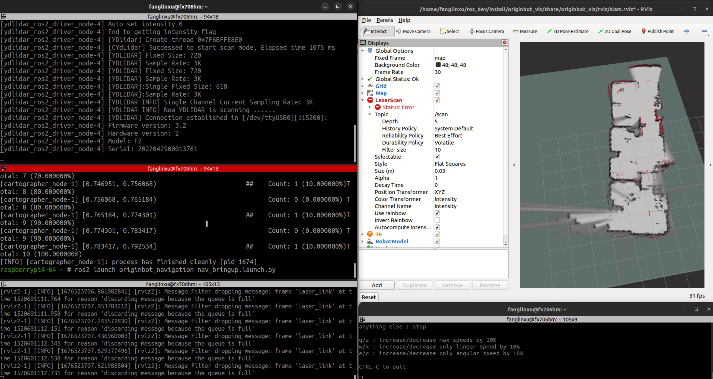

嵌入式ROS运行时支持¶
总体介绍¶
机器人尤其服务机器人领域近年来发展迅速，ROS是一个适用于机器人的开源的元操作系统，已在众多领域被广泛应用，常规ROS存在较多平台约束，大多与ubuntu等desktop版本强依赖。
随着ROS1开始广泛融入各领域无人系统的研发，系统的诸多问题陆续暴露出来。为了适应新时代机器人研发的和操作系统生态发展的需要，ROS2应运而生。
为使能ROS2在高度定制化的嵌入式Linux运行，支持通过yocto构建的meta-ROS（原LG维护）layer层成为嵌入式ROS支持的关键途径。然而，当前原生meta-ros应用门槛较高且未充分考虑嵌入式运行时的关键场景要素。
openEuler Embedded的嵌入式ROS运行时支持意在提高易用性、解决高门槛问题的同时，构建嵌入式运行时竞争力（如实时、小型化等）。
框架¶
openEuler Embedded中ROS运行时整体架构图如下所示，分为运行视图和构建视图，构建视图总体基于开源meta-ros layer meta-ros 作为基础。
 图 1 openEuler Embedded中ROS运行时支持基础架构¶
其中，
meta-openuler层 提供依赖解耦和嵌入式定制(针对编译类、观测类、仿真类等工具对onboard/运行时部署进行解耦)，负责镜像快速集成和SDK工具的生成。
ros2recipe模块 提供了第三方ros源码到yocto配方的转换工具（不同于社区原生meta-ros生成工具superflore），作为meta-openeuler镜像快速集成的输入。
快速开发SDK模块 提供了第三方ros源码到运行时应用的交叉编译转化。
运行时优化模块 联通OS侧特性，链接混合关键部署等RTOS实时及总线能力，最终提供复杂系统的实时和通信解决方案。
镜像构建指南¶
openEuler Embedded 支持ROS运行时相关组件的单独构建和镜像集成构建案例。
构建指导
使用oebuild进行构建即可，具体使用方式参照oebuild指导，构建qemu-ros参照如下命令:
$ oebuild generate -p qemu-aarch64 -f openeuler-ros -d aarch64-qemu-ros $ oebuild bitbake $ bitbake openeuler-image-ros
构建树莓派参照如下命令
$ oebuild generate -p raspberrypi4-64 -f openeuler-ros -d raspberrypi4-64-ros $ oebuild bitbake $ bitbake openeuler-image-ros
Note
当前openeuler-image-ros镜像默认集成ros-core核心功能
基于树莓派的openeuler-image-ros镜像还加入了SLAM典型功能 （相关导航和制图典型场景功能正在完善中，欢迎试用和加入贡献）
另外按照嵌入式运行时原则，将尽量不在target集成编译类、观测类、仿真类等工具
镜像使用示例¶
以qemu-aarch64和originbot小车（树莓派作为主控板）为例:
1.QEMU多机部署和demo_nodes_cpp示例
step1: 部署两个QEMU机器
在host中创建网桥br0
brctl addbr br0启动qemu1
qemu-system-aarch64 -M virt-4.0 -m 1G -cpu cortex-a57 -nographic \ -kernel zImage \ -initrd <openeuler-image-qemu-xxx.cpio.gz> \ -device virtio-net-device,netdev=tap0,mac=52:54:00:12:34:56 \ -netdev bridge,id=tap0Attention
首次运行如果出现如下错误提示
failed to parse default acl file `/usr/local/libexec/../etc/qemu/bridge.conf' qemu-system-aarch64: bridge helper failed则需要向指示的文件添加”allow br0”：
echo "allow br0" > /usr/local/libexec/../etc/qemu/bridge.conf启动qemu2
qemu-system-aarch64 -M virt-4.0 -m 1G -cpu cortex-a57 -nographic \ -kernel zImage \ -initrd openeuler-image-qemu-aarch64-2023xxx.rootfs.cpio.gz \ -device virtio-net-device,netdev=tap1,mac=52:54:00:12:34:78 \ -netdev bridge,id=tap1Attention
qemu1与qemu2的mac地址需要配置为不同的值。
配置IP
配置host的网桥地址
ifconfig br0 192.168.10.1 up配置qemu1的网络地址
ifconfig eth0 192.168.10.2配置qemu2的网络地址
ifconfig eth0 192.168.10.3step2: 分别在两个QEMU机器中运行demo_nodes_cpp发布和订阅
qemu1执行
# ROS环境变量初始化 $ source /etc/profile.d/ros/setup.bash # demo消息订阅 $ ros2 run demo_nodes_cpp listenerqemu2执行
# ROS环境变量初始化 $ source /etc/profile.d/ros/setup.bash # demo消息发布 $ ros2 run demo_nodes_cpp talkerNote
单机通信同理，在同一台设备上通过多个终端分别执行demo_nodes_cpp发布和订阅即可，属于ROS常规用法，不再详述。
2.originbot小车制图和导航示例（树莓派作为主控板）
step1: originbot小车雷达USB、底盘驱动板串口完成连接
以树莓派作为主控板为例，假如雷达使用USB串口且对应设备为ttyUSB0、底盘串口使用GPIO 14/15且对应ttyS0
Note
以上串口设备为示例配置，雷达串口号和originbot底盘串口号用户可自行修改配置，配置文件位置例（直接修改即生效）：
/usr/share/originbot_base/launch/robot.launch.py
/usr/share/originbot_bringup/param/ydlidar.yaml
step2: 环境准备，并配置originbot小车和观测PC处于同一网段
以树莓派作为主控板通过无线网络连接为例（可使用无线路由器或无线热点，需要小车和观测PC处于同一个网段）
openEuler Embedded树莓派使能无线连接参见 openEuler Embedded网络配置-Wi-Fi网络配置
step3: 通过观测PC，远程ssh登录originbot小车，执行运行时ROS应用
以建图为例，整体过程和originbot官网过程一样，可参考
首先，ssh登录originbot小车终端1，执行如下命令：
# ROS环境变量初始化 $ source /etc/profile.d/ros/setup.bash # 启动机器人底盘和激光雷达： $ ros2 launch originbot_bringup originbot.launch.py use_lidar:=true然后，ssh登录originbot小车终端2，执行如下命令：
# ROS环境变量初始化 $ source /etc/profile.d/ros/setup.bash # 启动cartographer建图算法： $ ros2 launch originbot_navigation cartographer.launch.pystep4: 在观测端PC，启动上位机可视化软件以便查看SLAM的完整过程，同时启动上位机键盘控制远程小车
整体过程和originbot官网过程一样，可参考
首先，观测端PC开启一个终端，进入ROS环境后启动rviz观测软件
$ ros2 launch originbot_viz display_slam.launch.py然后，观测端PC开启另一个终端，进入ROS环境后启动键盘控制节点用于控制小车，并按照提示控制小车完成建图
$ ros2 run teleop_twist_keyboard teleop_twist_keyboardstep5: 保存运行时数据（建图数据等）
以建图保存为例，整体过程和originbot官网过程一样，可参考
不要关闭之前步骤的端口，ssh登录originbot小车终端3，执行如下命令
# ROS环境变量初始化 $ source /etc/profile.d/ros/setup.bash # 保存地图： $ ros2 run nav2_map_server map_saver_cli -f my_map --ros-args -p save_map_timeout:=10000  图 2 openEuler Embedded中ROS SLAM DEMO示例¶
快速开发SDK¶
使用说明
版本新增支持快速开发SDK，目前支持在oebuild初始化的容器中，通过安装构建生成的SDK，对ROS包进行快速交叉编译。目前支持colcon编译工具，和基础colcon用法一致。
使用约束
和常规colcon一样，我们支持了colcon交叉编译基本框架，不过由于ROS2软件包的语言和依赖库多种多样，目前仅支持C/C++/Python三种常用语言的软件包，而类似RUST等依赖cargo的软件包还不支持。欢迎开发者持续贡献openEuler Embedded社区。
使用方法
以树莓派ROS2镜像为例：
1. 在构建完成镜像后，通过populate_sdk生成SDK
$ oebuild generate -p raspberrypi4-64 -f openeuler-ros -d raspberrypi4-64-ros $ oebuild bitbake $ bitbake openeuler-image-ros $ bitbake openeuler-image-ros -c populate_sdk随后在“output/[时间戳]/”目录下即可找到对应SDK安装文件，例如
openeuler-glibc-x86_64-openeuler-image-ros-cortexa72-raspberrypi4-64-toolchain-23.03.sh
2. SDK的安装和初始化
目前可用oebuild初始化的构建容器作为开发容器（后续会推出专用SDK的一站式oebuild功能，敬请期待）。
(1). 进入容器环境
有两种方式可进入容器，任选其一即可：
方式1：通过oebuild bitbake进入容器
此方式同时会进入bitbake，和SDK环境暂不冲突，且能够自动初始化容器的主机端工具环境。
$ oebuild bitbake方式2：通过docker命令进入纯容器环境
容器id可通过查看oebuild初始化的构建目录的.env文件，其short_id就是容器id。以“18bb5d58da3e”为例：
$ docker exec -it 18bb5d58da3e bash $ su openeuler $ source /opt/buildtools/nativesdk/environment-setup-x86_64-pokysdk-linux #初始化nativesdk（在oebuild bitbake中会自动初始化）(2). 安装1中生成的SDK的sh安装脚本
假设SDK脚本位于目录“/home/openeuler/build/raspberrypi4-64/output/20230523023324”
$ cd /home/openeuler/build/raspberrypi4-64/output/20230523023324 $ ./openeuler-glibc-x86_64-openeuler-image-ros-cortexa72-raspberrypi4-64-toolchain-23.03.sh # 输入安装目录，假设为“/home/openeuler/build/raspberrypi4-64/output/20230523023324/sdk”，目录请事先创建好，按“y”确认 $ /home/openeuler/build/raspberrypi4-64/output/20230523023324/sdk $ y(3). 根据提示执行SDK初始化
后续再次进入容器环境后，只需要初始化即可，不需要（2）安装步骤，用法和我们常规SDK的使用无区别。
$ . /home/openeuler/build/raspberrypi4-64/output/20230523023324/sdk/environment-setup-cortexa72-openeuler-linux可以看到，此步骤将自动初始化交叉编译的依赖，如colcon等工具。
3. 通过colcon交叉编译ROS包
您只需要进入到ros包工程或colcon工程的工作路径，执行colcon进行编译即可，将自动进行交叉编译。
$ cd your_rospkg_workspace $ colcon build --merge-install --cmake-force-configure --cmake-args -DBUILD_TESTING=False完成后，和colcon用法一样，在工作目录将生成install文件夹，即交叉编译的目标产物。
4. 部署和运行
在3中，colcon生成的install可以直接拷贝到目标机器上进行部署运行，但由于colcon固定了工作目录，拷贝到新目录后，需要替换一下colcon指定的工作目录。
假设原colcon工作目录为“home/openeuler/build/raspberrypi4-64/your_colcon_workspace/install”，需编辑全部setup.sh文件，将如下内容进行修改：
_colcon_prefix_chain_sh_COLCON_CURRENT_PREFIX=/home/openeuler/build/raspberrypi4-64/your_colcon_workspace/install部署到目标环境后，假设新工作目录为“/ros_runtime/install”，则需将setup.sh文件的对应行修改为如下内容：
_colcon_prefix_chain_sh_COLCON_CURRENT_PREFIX=/ros_runtime/install您可执行如下命令进行批量修改：
$ cd /ros_runtime/install $ find ./ -type f -exec sed -i 's@/home/openeuler/build/raspberrypi4-64/your_colcon_workspace/install@/ros_runtime/install@g' {} +最后通过如下命令进行工作目录的初始化：
$ cd /ros_runtime/install $ source /etc/profile.d/ros/setup.bash # 初始化ROS工作目录 $ source setup.sh # 将当前目录，加入到ROS的额外工作目录
关于ROS源码¶
上游ROS发布的源码存放于github，中国用户下载较慢，且src-openEuler社区针对ROS全量分包源码还在完善。
为加构建过程，嵌入式版本统一将ROS涉及的ROS软件包临时存放于yocto-embedded-tools仓库的dev_ros分支中，并遵循一定的源码存放规则，后续src-openeuler针对ROS分包支持后将对此部分进行优化。
源码存放规则（暂行）
仓库：https://gitee.com/openeuler/yocto-embedded-tools.git
分支：dev_ros
相对目录：ros_depends
要求：
以yocto的包名作为文件夹名，单独存放tarball压缩包，例如ros_depends/tf2/0.13.12-1.tar.gz，并按要求填充src.txt配置文件。tarball的下载建议使用src_helper.sh脚本。
src_helper.sh脚本说明
当前目录中提供了src_helper.sh脚本，脚本会根据src.txt描述文件进行对应包名目录的创建并通过wget下载对应的包， 该脚本用于开发者添加新源码包到该仓库时使用。
src.txt说明
若需要引入新的ROS标准包，开发者可追加ros.txt内容，并按如下规则：
第一列 为yocto中包名。
第二列 为该包在yocto中定义的工作目录，比如通常SRC_URI若为git链接，则需使用git。单包多压缩包目录可表示多行，可参见foonathan-memory。
第三列 为该包的上游获取地址，若为标准ROS包，开发者可从meta-ros对应distro的bb文件中通过”matches with”关键字获取到。
Note
第一列和第二列的包名在yocto构建时将自动引用。
整个yocto-embedded-tool的dev_ros分支，在构建时会以新本地名字ros-dev-tools作为构建源码输入存在。
实现参见: openeuler_ros_source.bbclass
快速镜像集成(ros2recipe)¶
现状: ros2recipe当前还处于前期开发阶段，在依赖解析部分还存在较多工作，其原理类似meta-ros的生成工具superflore。
例子: 我们在yocto工程中集成了originbot ros第三方包，其基础bb配方是通过ros2recipe工具转化，但目前还需要增加bbappend文件来适配部分依赖。
其他说明: superfores能够实现以一个ROS版本生成全量官方ROS组件包，对整体ROS和oe层进行了复杂的依赖关联，但不支持将独立的第三方包转换为yocto配方。
针对该场景，ros2recipe如何能够更好更快的补全依赖关系、减少手工bbappend的适配，是一个很有挑战性的工作。我们会逐步完善，在此也期待您的贡献。
使用方法
yocto-meta-openeuler/scripts/ros2recipe.shNote
其中相对目录的使用原理，请参考并理解“关于ROS源码”。